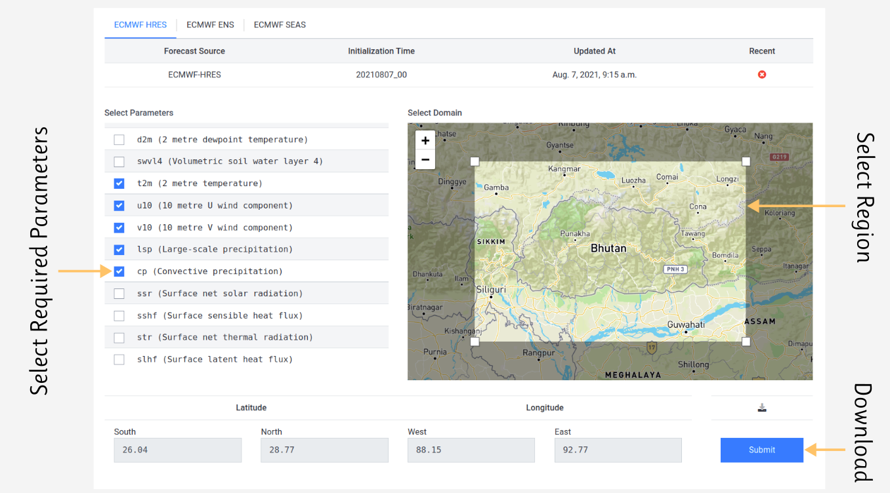
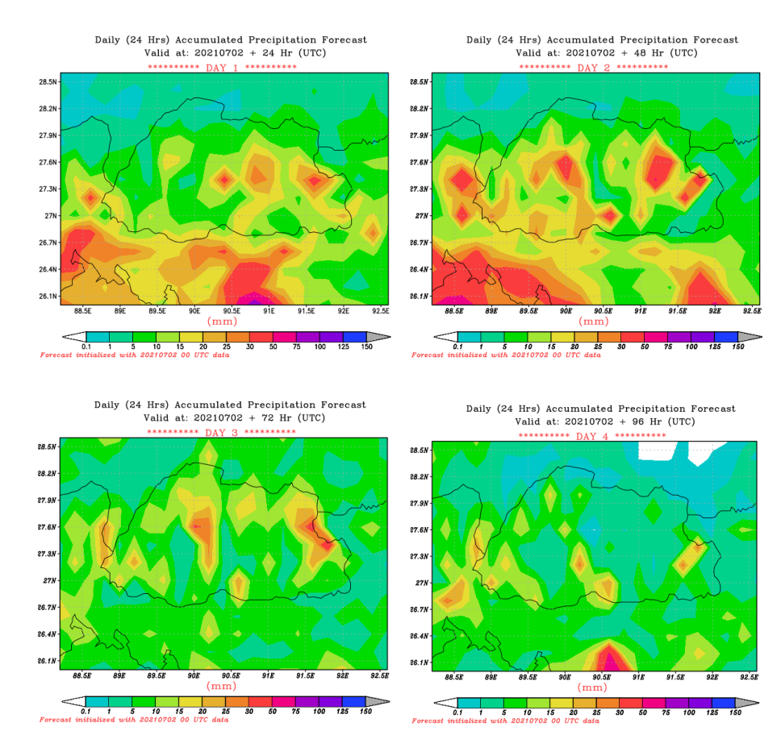

Plotting subset netCDF with grads
Download subset netCDF from DataEx
- In DataeEx visit Forecast > Subset netCDF.
- Select forecast source, parameter and region values and proceed to download netCDF as shown in the image below:

Plotting with GRADS
-
Ensure you have the following files in the folder where you are running the scripts:
- netCDF file containing forecast data downloaded from DataEx.
- Grads scripts (sample script provided for rainfall to customize as required for other parameters)
- Color bar file (cbar.gs) - also provided to download
- Shape file for overlay (for district or other layers)
- Sample file. (Copy the script and put in a file Plotgrads_pcp.gs or any preferred name). Or you can use your own script files.
- A sample code is shown in below. (Copy the code and put in a file Plotgrads_pcp.gs or any preferred name).
- To plot run command (use pbc or pbc depending on the mode of plotting (p=portrait or l=landscape)
grads -pbc Plotgrads_pcp.gs
You should see plots like the following:-

Example Grads Script for plotting rainfall
****************************************************************
** This script plots downloaded subset of ECMWF HRES data
** RIMES **
****************************************************************
reinit
**Provide the NC file downloaded from the DataEx.
'sdfopen ECMWF_HRES_NC_28.78N_25.85S_92.74E_88.2W.nc'
**** DATA loop for plotting for daily accumulated****
i=1
k=1
day=24
while (i<41)
j=i+4
** SET the color bar and map
'set clopts 1 2 .10'
'set clevs 0.1 1 5 10 15 20 25 30 50 75 100 125 150 175'
'set ccols 0 5 13 3 10 7 12 8 2 6 9 14 4'
'set grads off'
*'set mpdraw off'
'set gxout shaded'
'set mpdset hires'
***Plotting parameter.. for total precipitation (CP and LSP)
if(i=1)
'd ((cp(t='j')-cp(t=2))+(lsp(t='j')-lsp(t=2)))*1000'
*************
**Put the Shape file that you want to overlay here...
**Only put the file name and no extension like .shp.
**Ensure the location of the file is correct
*************
*'set line 4 1 2'
*'draw shp bhu_adm1'
*******************
else
'd ((cp(t='j')-cp(t='i'))+(lsp(t='j')-lsp(t='i')))*1000'
*******************
*'set line 4 1 2'
*'draw shp bhu_adm1'
*******************
endif
*******************
*Plot cbar and add titles
*******************
'run cbar 1.1 0 4.3 2.0'
'set font 2'
'set strsiz .14'
'draw string 1.5 10.5 NHMS/INIT:ECM_00UTC'
'set font 1'
'draw string 4.4 8.99 Daily (24 Hrs) Accumulated Precipitation
Forecast'
'draw string 4.5 8.69 Valid at: 20210702 + 'day' Hr (UTC)'
'set string 2 9 2 1'
'set strsiz .15'
'draw string 4.2 8.35 ********** DAY 'k' **********'
'draw string 4.2 2.55 (mm)'
'set font 2'
'set strsiz .10'
'draw string 2.2 1.75 Forecast initialized with 20210702 00 UTC
data'
day=day+24
'gxprint rain'k'.png png white'
'clear'
k=k+1
i=i+4
endwhile
quit